O que é uma nuvem e como ela se forma
Uma nuvem é um conjunto visível de gotículas de água ou cristais de gelo suspensos na atmosfera. Cada gotícula mede cerca de 0,01 mm de diâmetro, pequena o bastante para ser mantida no ar pelas correntes verticais.
O processo começa quando uma massa de ar sobe e se resfria. O ar frio comporta menos vapor de água; ao atingir o ponto de orvalho, o vapor passa por condensação. Para isso, porém, ele precisa de superfícies: as gotículas se formam ao redor dos núcleos de condensação.
O ar sobe por três caminhos principais: o aquecimento do solo, o encontro entre massas de ar de temperaturas diferentes e o relevo, que obriga o ar a subir as montanhas. O modo como ele sobe define o formato da nuvem: colunas isoladas de ar quente geram nuvens de crescimento vertical, enquanto elevações lentas em grandes áreas geram camadas extensas. Para entender o aquecimento e a subida do ar, veja Como o Céu Funciona.
Como ler o nome de uma nuvem
Os nomes dos dez gêneros de nuvens seguem o Atlas Internacional de Nuvens, publicado pela OMM. São combinações de radicais do latim, e cada um descreve a altura ou o aspecto da nuvem. Conhecer os cinco radicais abaixo permite interpretar o nome de qualquer gênero.
Cirro-
cirrus: mecha de cabelo. Nuvem alta, fibrosa e formada por cristais de gelo.
Alto-
Vem de altus (alto), mas na classificação indica nuvem de nível médio.
Strato-
stratus: camada estendida. Nuvem em camada, sem contornos individuais.
Cumulo-
cumulus: pilha, amontoado. Nuvem em massas isoladas, com crescimento vertical.
Nimbo-
nimbus: chuva. Nuvem que produz precipitação.
Exemplos de leitura
- Nimbostratusnimbo (chuva) + stratus (camada): camada espessa que produz chuva.
- Cumulonimbuscumulo (pilha) + nimbus (chuva): nuvem de grande crescimento vertical, capaz de produzir precipitação intensa.
- Cirrocumuluscirro (alta) + cumulus (amontoado): nuvem alta formada por pequenos flocos.
- Altostratusalto (nível médio) + stratus (camada): camada de nível médio.
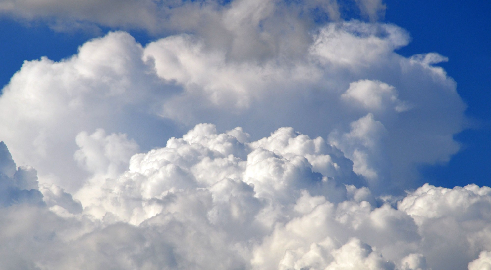
Classificação das nuvens por altitude
A OMM reconhece dez gêneros de nuvens, agrupados conforme a altura da base. As faixas são aproximadas e variam com a latitude: as altas têm base acima de cerca de 6 km e são formadas por cristais de gelo; as médias, entre 2 e 7 km em latitudes médias, podem conter água e gelo; as baixas, até 2 km, são formadas quase sempre por água líquida. As de desenvolvimento vertical atravessam todos esses níveis.
Clique no nome de uma nuvem para ver a foto, as características e o que ela costuma indicar.
Altas
Médias
Baixas
Desenvolvimento vertical
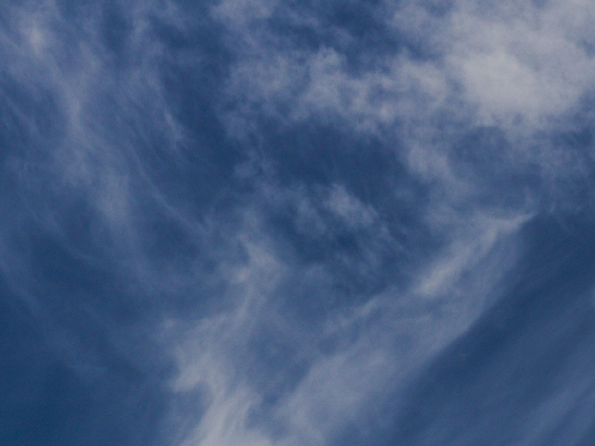
Cirrus Ci
Filamentos finos e brancos, formados por cristais de gelo, que lembram fios de cabelo ou penas. Não produzem precipitação.
Indica: tempo estável; quando se tornam mais frequentes e espessas, podem anteceder a chegada de uma frente.
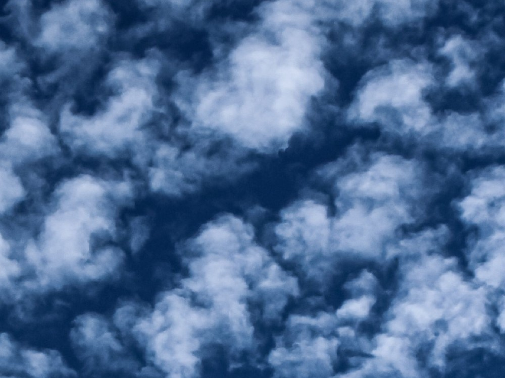
Cirrocumulus Cc
Camada fina de pequenos flocos ou ondulações brancas, sem sombra própria, em padrão que lembra escamas. É uma das nuvens altas menos comuns e costuma durar pouco.
Indica: umidade em altitude, sem precipitação associada.
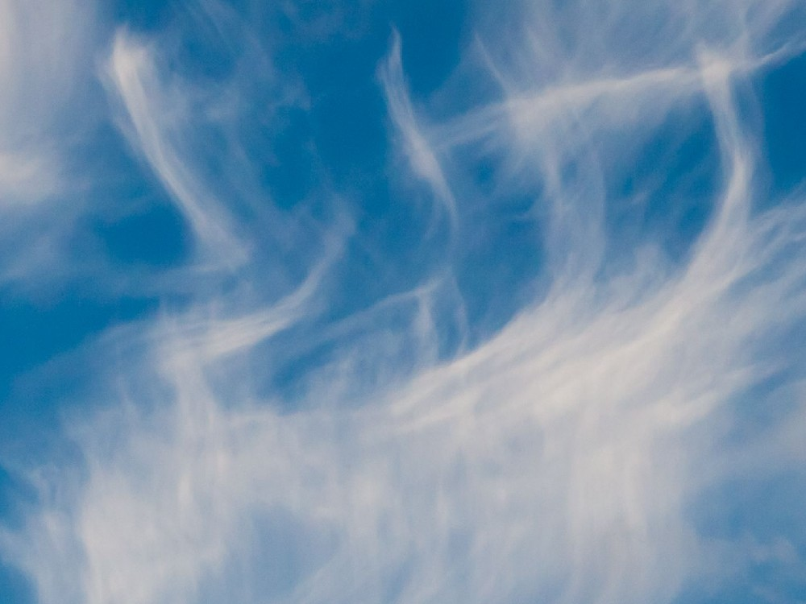
Cirrostratus Cs
Véu fino e transparente de cristais de gelo que cobre parte ou todo o céu. Pode produzir halos ao redor do Sol ou da Lua.
Indica: frequentemente antecede a chegada de um sistema frontal.
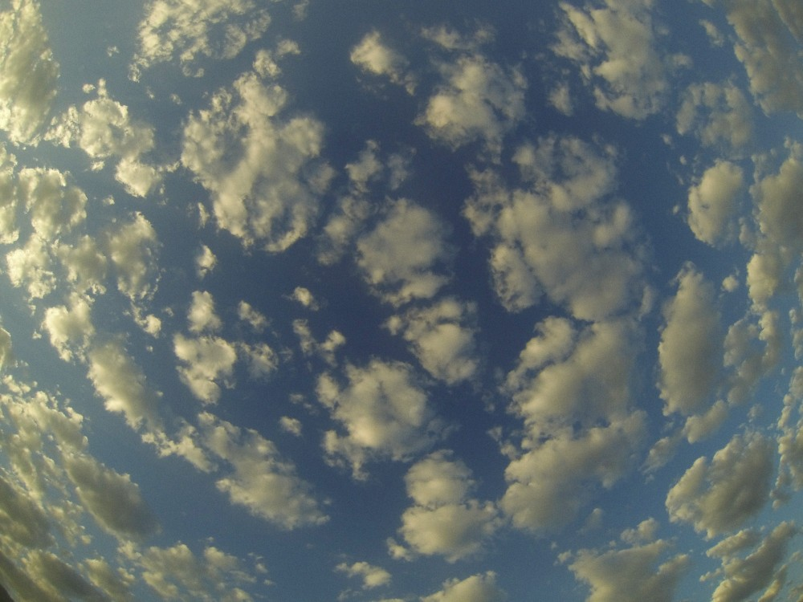
Altocumulus Ac
Camadas ou grupos de nuvens brancas ou cinzentas, com partes arredondadas em forma de bolas ou rolos e sombras visíveis. Podem ter água e gelo.
Indica: instabilidade em níveis médios; pode anteceder a chegada de frentes.
Altostratus As
Camada cinza ou azulada, uniforme, que cobre o céu. O Sol aparece como um disco difuso, sem halo, como se visto através de vidro fosco.
Indica: frequentemente antecede precipitação contínua associada a frentes.
Stratus St
Camada cinza, uniforme e de base baixa, parecida com um nevoeiro elevado. A diferença para o nevoeiro é que o stratus tem a base acima do solo; no nevoeiro, a nuvem toca o solo e a visibilidade fica abaixo de 1 km.
Indica: ar estável e úmido perto da superfície; pode haver chuvisco.
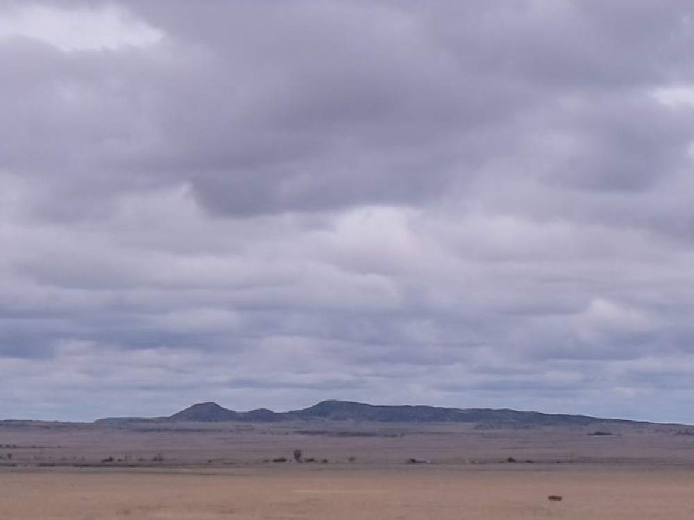
Stratocumulus Sc
Camada ou conjunto de nuvens baixas com elementos arredondados, brancas e cinzentas, com espaços de céu azul entre elas.
Indica: tempo estável com alguma umidade; raramente produz precipitação fraca.
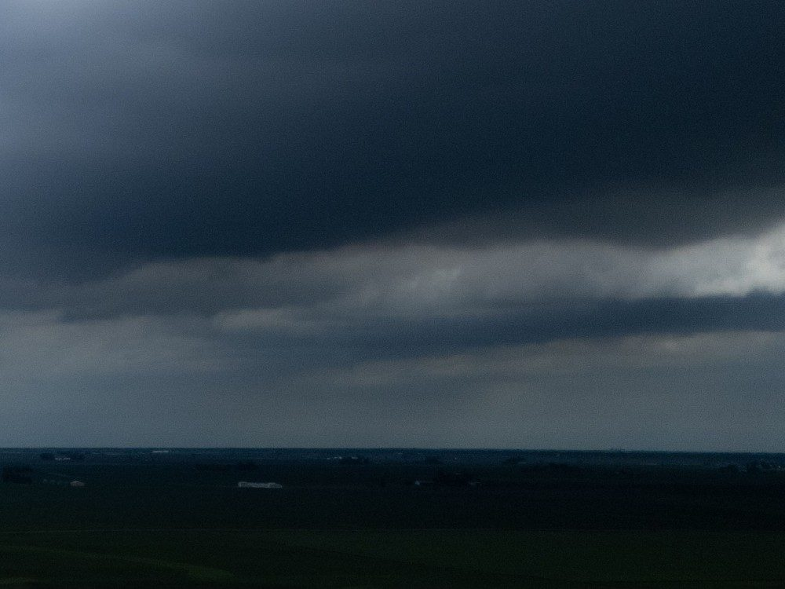
Nimbostratus Ns
Camada espessa e cinza-escura que cobre o céu por completo e encobre o Sol. Tem base baixa, mas seu topo atinge níveis médios, por isso algumas fontes a incluem entre as médias.
Indica: chuva contínua, de intensidade fraca a moderada, em geral por horas e associada a frentes.
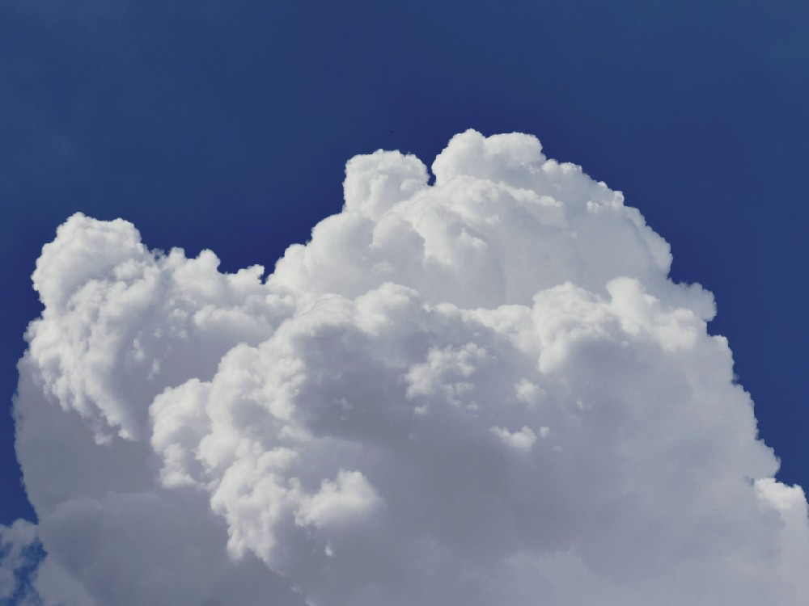
Cumulus Cu
Nuvens isoladas, de contornos nítidos, base plana e topo em forma de couve-flor, formadas quando o ar aquecido sobe em colunas. O Cumulus humilis, de pequeno desenvolvimento, é comum em tempo estável. O Cumulus congestus, de grande desenvolvimento, pode produzir pancadas de chuva e evoluir para Cumulonimbus.
Indica: tempo estável (humilis) ou instabilidade com possibilidade de pancadas de chuva (congestus).
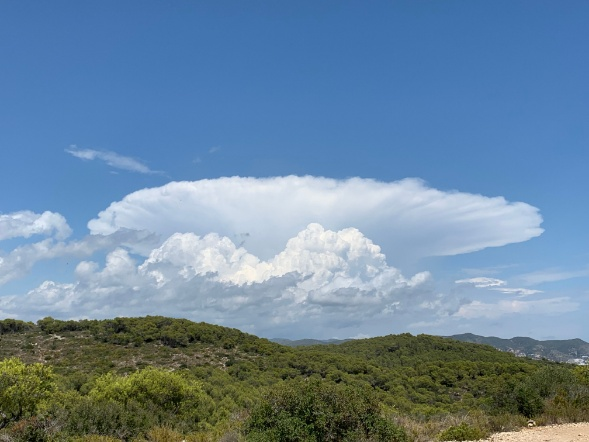
Cumulonimbus Cb
Nuvem de grande extensão vertical, com base baixa e topo que pode ultrapassar 12 km, em geral terminando em forma de bigorna. É a principal nuvem produtora de relâmpagos e trovões.
Indica: nível de periculosidade alto devido às correntes ascendentes e descendentes intensas, que podem causar chuva forte, granizo, rajadas de vento e, em alguns casos, tornados.
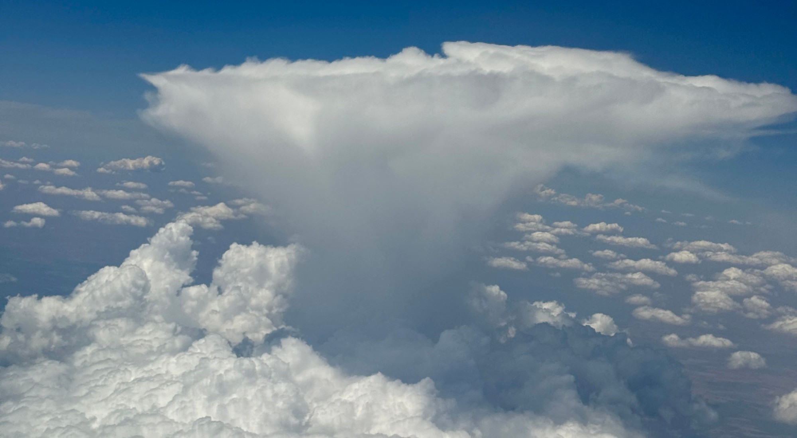
Cumulonimbus: a nuvem de tempestade
O Cumulonimbus se forma quando uma corrente ascendente forte leva ar úmido a grandes altitudes. A base fica, em geral, abaixo de 2 km, e o topo, que pode passar de 12 km, chega a níveis em que a água congela. Ao atingir a tropopausa, o topo se espalha horizontalmente e forma a bigorna.
Por reunir correntes ascendentes e descendentes intensas, o Cumulonimbus tem nível de periculosidade alto. Algumas feições visíveis ajudam a avaliar o estágio e a severidade da tempestade:
Bigorna (incus)
Topo achatado e espalhado, formado por cristais de gelo, que indica que a nuvem atingiu o limite de crescimento vertical.
Mamma (mammatus)
Bolsas na parte inferior da bigorna, resultado de ar descendente e turbulento. Costumam estar associadas a tempestades fortes, mas por si só não são perigosas.
Nuvem-prateleira (arcus)
Camada horizontal, baixa e densa, na frente da tempestade, formada pelo ar frio que desce e se espalha. Sua passagem costuma trazer rajadas de vento e chuva forte.
Nuvem-parede
Abaixamento localizado da base, sob a corrente ascendente. Quando apresenta rotação visível e persistente, pode anteceder a formação de um tornado.
Os fenômenos produzidos por essa nuvem, como tornados, granizo e vendavais, são o assunto de Conheça os Eventos Severos. Ao identificar um Cumulonimbus em desenvolvimento, consulte os alertas da Defesa Civil e do INMET.
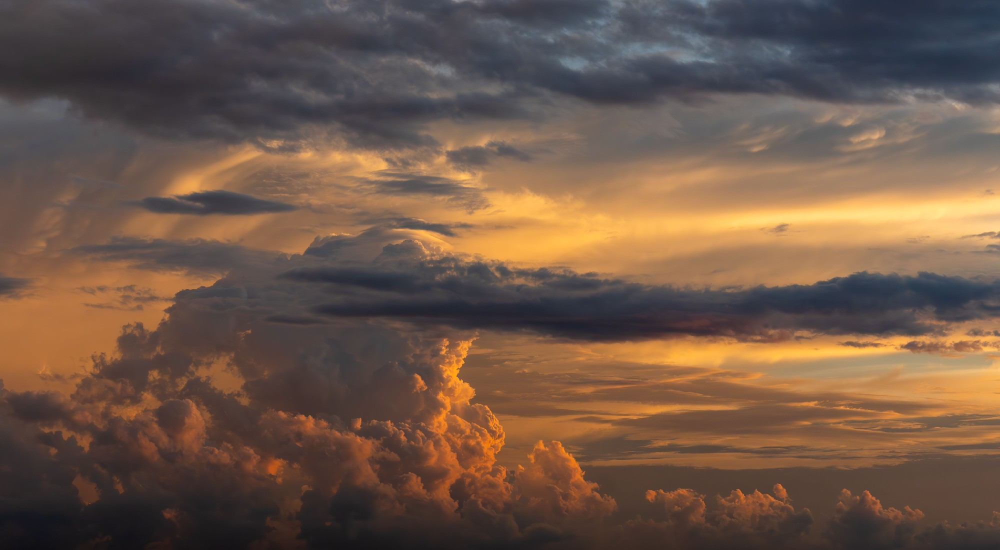
Como identificar nuvens
A partir do solo: três perguntas
1. Em que altura está?
Fibras finas e brancas em grande altura indicam nuvens altas (cirro-). Nuvens de nível médio (alto-) mostram partes arredondadas ou uma camada uniforme. Nuvens baixas têm contornos grandes e detalhes de textura.
2. Qual o formato?
Filamentos sugerem cirro-; uma camada uniforme sugere strato-; massas isoladas com topo arredondado sugerem cumulo-.
3. Há precipitação?
Chuvisco aponta para o Stratus; chuva contínua, para o Nimbostratus; pancadas com relâmpagos, para o Cumulonimbus.
Combinando as respostas, o gênero costuma aparecer: uma nuvem alta e fibrosa é um Cirrus; uma camada baixa que produz chuva contínua é um Nimbostratus.
Do espaço e do radar
Satélites e radares observam a atmosfera de formas diferentes. O satélite vê o topo das nuvens; o radar meteorológico detecta principalmente a precipitação, porque as gotículas de uma nuvem são pequenas demais para refletir bem o sinal.
Satélite (infravermelho)
No canal infravermelho, o satélite mede a temperatura do topo da nuvem. Como a temperatura diminui com a altitude, topos mais frios indicam nuvens mais altas e, em geral, tempestades mais intensas. Nas imagens do INMET com realce de cores, as tonalidades destacam topos entre -70 °C e -15 °C.
Um Cumulonimbus aparece como uma mancha brilhante de topo muito frio. Em estudos brasileiros, topos abaixo de cerca de -55 °C são usados para identificar núcleos convectivos, as regiões mais intensas da tempestade.
Radar meteorológico
O radar emite pulsos e mede o que volta da chuva. A refletividade indica a intensidade da precipitação e permite acompanhar seu deslocamento.
Um Cumulonimbus aparece como um núcleo de refletividade alta, com bordas bem definidas. Nuvens sem precipitação, como Cirrus e Cumulus humilis, em geral não aparecem no radar.